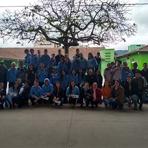

algumas noticias da unidavi
Formatura Institucional

Na tarde da quinta-feira (23), o Centro Universitário para o Desenvolvimento do Alto Vale do Itajaí - Unidavi realizou a cerimônia de Colação de Grau Institucional dos Cursos de Administração e Educação Física.
O Reitor Prof. M.e Célio Simão Martignago conduziu o momento acompanhado do vice-reitor e pró-reitor de Administração, professores Alcir Texeira, do professor Doutor Mehran Ramezanali, coordenador do curso de Administração e do professor M.e Júlio Cesar Nasário, coordenador do curso de Educação Física.
Eleição Cipa

Nos dias 21 e 22 de agosto aconteceu a Eleição da Cipa. Professores e funcionários dos 4 campi votaram para escolher os Representantes dos Empregados - Gestão 2018/2019.
- Claudia Adriana da Rosa
- Airton Cachoeira
- Ademir Celso Correia Junior
- Françoa Jorge da Silva
- David Ferreira
- Fabiane Terezinha Rosa
Comportamento do Adolescente é tema de palestra
A Escola de Educação Básica Orlando Bertoli, de Presidente Getúlio recebeu uma equipe da Unidavi para a realização de uma ação de extensão: A palestra: Comportamento do Adolescente.
A temática é bastante ampla e foram abordados viéses como alterações neurais e hormonais além de competências para a faixa etária. Segundo a palestrante e psicóloga Indiara Etelvina Gonçalves, o principal objetivo é que os adolescentes "tenham a compreensão e desenvolvam adequadamente suas competências para que tenham uma entrada na fase adulta mais saudável e assertiva" completa ela.
outras noticias
- çççççççççç
- çççççççççç
- çççççççççç
noticias da unidavi